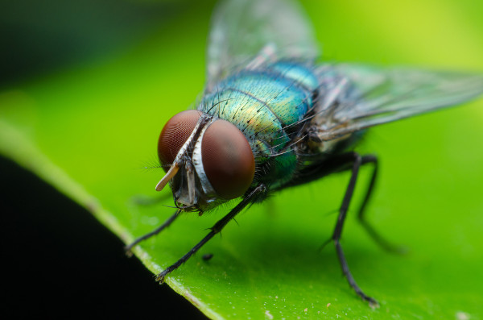

Tipos de inseto
Insetos são animais invertebrados que pertencem ao grupo dos artrópodes. Apresentam exoesqueleto resistente; corpo dividido em cabeça, tórax e abdome; três pares de patas; um par de antenas; e a presença de asas na maioria das espécies, sendo esses animais os únicos invertebrados capazes de voar. Os insetos podem apresentar desenvolvimento direto ou indireto a depender da espécie.
Os insetos são muito importantes para os ecossistemas onde estão inseridos, fazendo parte da cadeia alimentar e, em alguns casos, ajudando na polinização e dispersão de sementes de espécies vegetais. Insetos também são conhecidos por transmitirem doenças, sendo esse o caso do mosquito-da-dengue.
Resumo sobre os insetos:
Insetos são animais invertebrados do filo dos artrópodes.
Possuem exoesqueleto resistente; patas articuladas; corpo dividido em cabeça, tórax e abdome; três pares de patas; um par de antenas; um par de olhos compostos; e peças bucais aparentes.
Possuem sistema circulatório aberto, sistema digestório completo, respiração traqueal e a excreção é feita por túbulos de Malpighi.
Podem apresentar desenvolvimento direto ou indireto.
São importantes ecologica e economicamente.
Abelhas, baratas, mosquitos e vespas são exemplos de insetos.

Criador : fernando
Suporte em : 99999
Localização Brasil, Palmas To